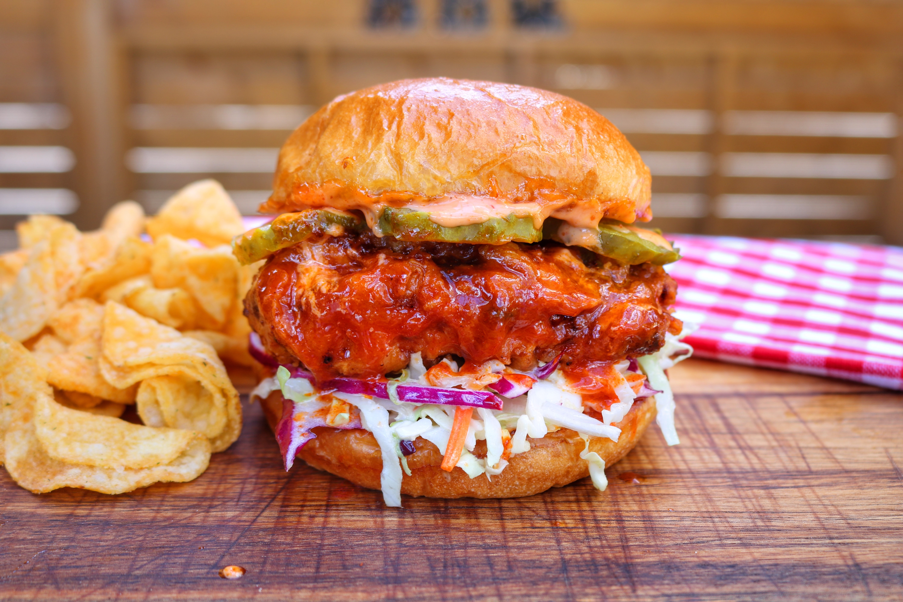

Nashville Hot Chicken Burger

Description
The Nashville Chicken Burger features crispy, spicy fried chicken coated in a fiery cayenne pepper glaze, layered with pickles and creamy slaw. It's a bold and flavorful Southern classic with a perfect balance of heat and crunch.
Ingredients
- 2 chicken breasts
- 1/4 cup dill pickle juice
- Louisiana Hot sauce, to taste
- 1/2 cup buttermilk
- 1 cup all-purpose flour
- 2 Eggs, beaten
- 2 brioche buns
- Honey, for topping
- Pickle slices, for topping
- Coleslaw salad, for topping
- 2 tbsp brown sugar
- 3 tbsp cayenne pepper
- 1 tsp red pepper flakes
- 1 tsp garlic powder, paprika, chilli powder, kosher salt
- 1/2 cup (120 ml) oil, warm
- 4 tbsp mayonnaise
- 2 tbsp Sriracha Hot Sauce, or to taste
- 1 tsp Nashville hot rub
Steps
- Place chicken in a resealable bag and pour buttermilk, pickle juice, and hot sauce over top. Mix to combine. Cover and refrigerate for 2 to 12 hours (the longer the better flavor result).
- Remove chicken from the marinade and pat dry with paper towels. Discard brine.
- In a small bowl, combine brown sugar, cayenne, red pepper flakes, garlic powder, paprika, chili powder, and salt. Season the chicken breasts, coating evenly. Keep remaining dry rub aside for the Nashville hot sauce.
- Pre-heat Pit Boss smoker to 250°F.
- Smoke the chicken breasts until 140°F internal. Let cool.
- Meanwhile, pre-heat the deep fryer to 350°F.
- Dip each piece of chicken in flour, egg, and flour. Place on a baking rack and let sit for 10 minutes.
- Place in the deep fryer and cook until minimum internal temperature of 165°F.
- Prepare the sauce: In a small saucepan, add a ladle of hot oil and the remaining dry rub, whisking until smooth. Dunk or brush each piece of chicken with the sauce.
- Build the sandwiches. Slather both halves of the buns with spicy mayo, top with coleslaw, fried chicken, honey drizzle, and pickles.
Home